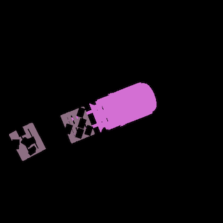
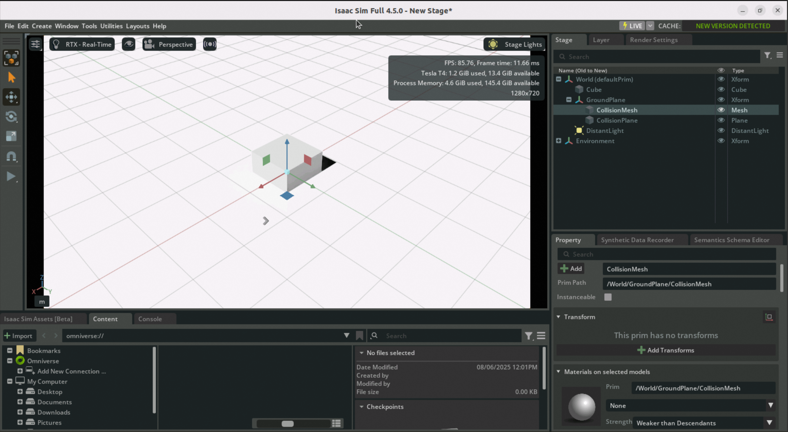
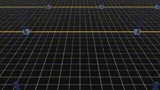

🤖 NVIDIA Isaac Lab User Guide
Complete Tutorial for Isaac Sim-based Unified Robotics Learning Framework
🎯 Product Overview
**NVIDIA Isaac™ Lab** is an open-source unified framework for robotics learning, designed to help train robot policies.
Isaac Lab is built on **NVIDIA Isaac Sim™**, utilizing **NVIDIA® PhysX®** and physics-based **NVIDIA RTX™** rendering to provide high-fidelity physics simulation. It bridges the gap between high-fidelity simulation and perception-based robot training, helping developers and researchers build more robots more efficiently.
🎯 Core Features
Isaac Lab service instances come with a complete Isaac Sim application built-in, supporting two training modes: standalone Isaac Sim simulation training and reinforcement learning training based on the Isaac Lab framework.
Isaac Lab service instances come with a complete Isaac Sim application built-in, supporting two training modes: standalone Isaac Sim simulation training and reinforcement learning training based on the Isaac Lab framework.
🖥️ Environment Access Configuration
💻 System Environment
The corresponding ECS instance is installed with Ubuntu graphical interface, supporting direct use through VNC in the ECS console.🔗 Accessing ECS Instance via VNC
Step 1: Enter ECS Console
In the resources section of the service instance details page, find the corresponding ECS instance and click to go to the ECS console.
Step 2: Select VNC Login
Click on the remote connection in the upper right corner, select VNC login method to enter the Ubuntu system's graphical interface.
Step 3: Enter Login Password
Here you need to enter the login password for the isaac-sim account. The password is the same as the ECS instance password, which can be viewed on the service instance overview page.
🎮 Isaac Sim User Guide
📁 Directory Structure
After logging into the ECS instance using the above method, open Terminal and you can see two important directories under the isaac-sim account:
📂 isaacsim
Isaac Sim installation directory, containing related startup and training scripts
Isaac Sim installation directory, containing related startup and training scripts
📦 isaacsim_assets
Isaac Sim assets directory, pre-downloaded resources for convenient training use
Isaac Sim assets directory, pre-downloaded resources for convenient training use
🔬 Example 1: Headless Mode Scene-based Synthetic Dataset Generation
📋 Feature Description
This example demonstrates the process of generating synthetic datasets using the omni.replicator extension. The generated data will be stored offline (on disk), making it available for training deep neural networks. The example can run in Isaac Sim's Python standalone environment and utilizes Isaac Sim and Replicator to create offline synthetic datasets for training machine learning models.
⚠️ Important Note
It is recommended to copy the official example code to the user directory for modification and use.
It is recommended to copy the official example code to the user directory for modification and use.
💻 Click to View Complete Execution Code
cd /home/isaac-sim
mkdir -p isaacsim_test
cd /home/isaac-sim/isaacsim_test
mkdir -p scene_based_sdg
cp -rf /home/isaac-sim/isaacsim/standalone_examples/replicator/scene_based_sdg/* /home/isaac-sim/isaacsim_test/scene_based_sdg/
# Render synthesis
# --config specifies configuration file path with headless=true setting
# --/persistent/isaac/asset_root/default specifies 3D asset storage path
/home/isaac-sim/isaacsim/python.sh ./scene_based_sdg/scene_based_sdg.py \
--config="/home/isaac-sim/isaacsim_test/scene_based_sdg/config/config_coco_writer.yaml" \
--/persistent/isaac/asset_root/default="/home/isaac-sim/isaacsim_assets/Assets/Isaac/4.5"
✅ Execution Results
Generated results are stored in "./isaacsim_test/_out_coco", visualization effects are as follows:
Generated results are stored in "./isaacsim_test/_out_coco", visualization effects are as follows:

🖼️ Example 2: Using Isaac Sim in GUI Mode
🚀 Launch Command
Execute the following command in Terminal to enter Isaac Sim's GUI interface:cd /home/isaac-sim/isaacsim
./isaac-sim.sh
⚠️ Important Notes
Isaac Sim startup is relatively slow and will show a waiting window. No action is required, just wait for some time.

Isaac Sim startup is relatively slow and will show a waiting window. No action is required, just wait for some time.
✅ Operation Example
Below is a cube created following the steps in the Getting Started Tutorial.
Below is a cube created following the steps in the Getting Started Tutorial.

🧠 Isaac Lab User Guide
📍 Installation Location
Isaac Lab service installation directory is located at `/home/isaac-sim/IsaacLab`, containing Isaac Lab's installation directory and startup scripts.🎯 Example 1: Headless Mode Agent Training
🎮 Training Task Description
This case uses the **Stable-Baselines3** reinforcement learning (RL) framework to solve the Cartpole balance control agent task.
🎯 Training Objective
Train the agent to learn how to control the cart's left and right movement to keep the pole upright.
Train the agent to learn how to control the cart's left and right movement to keep the pole upright.
🔧 Technical Framework
Stable-Baselines3 is a PyTorch-based reinforcement learning library that provides various stable and easy-to-use RL algorithms such as PPO, SAC, DQN, etc.
Stable-Baselines3 is a PyTorch-based reinforcement learning library that provides various stable and easy-to-use RL algorithms such as PPO, SAC, DQN, etc.
💻 Click to View Training Code
cd /home/isaac-sim
mkdir -p isaaclab_test
cd /home/isaac-sim/isaaclab_test
mkdir -p sb3
cp -rf /home/isaac-sim/IsaacLab/scripts/reinforcement_learning/sb3/* /home/isaac-sim/isaaclab_test/sb3/
# Start training
# --task specifies training task
# --num_envs specifies number of parallel environments
# --headless GUI-less mode
# --video generates training video
/home/isaac-sim/IsaacLab/isaaclab.sh -p ./sb3/train.py \
--task Isaac-Cartpole-v0 \
--num_envs 64 \
--headless \
--video
✅ Training Results
Training results are saved to
Training results are saved to
./logs/sb3/Isaac-Cartpole-v0, visualization results are as follows:

🎨 Example 2: GUI Mode Basic Object Generation
🚀 Launch Command
Execute the following command in Terminal to enter Isaac Lab's GUI interface:cd /home/isaac-sim/IsaacLab
./isaaclab.sh -p scripts/tutorials/00_sim/spawn_prims.py
🤖 NVIDIA Isaac Lab | Making Robot Learning Simpler and More Efficient
© 2009-2022 Aliyun.com 版权所有